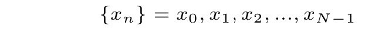
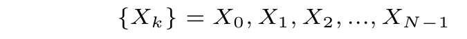
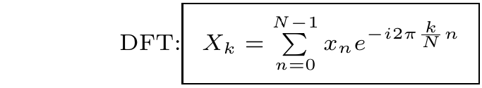

Discrete Fourier Transform
离散傅里叶变换是傅里叶变换及傅里叶级数的离散形式。由于计算机只能处理离散的和有限长度的信号数据，所以 DFT 设计为傅里叶变换的算法实现。
快速傅里叶变换 FFT (Fast Fourier Transform) 基于离散傅里叶变换，本文不讲 FFT，后续继续。
2024年5月25日 - fayige.top
设 {x_n}数列是需要分析的函数，由于计算机只能处理离散的信号，函数以离散的数列形式呈现，它是复数数列，也可看作向量。

{X_k}是经过DFT变换后的输出函数，也以数列的形式呈现。

将 x_n 变换成 X_k 的 DFT 算法：

离散傅里叶变换 DFT c++
c++ 标准库 std::complex 对复数的各种运算都支持的很好，可拿来直接使用
c++ 输出用 std::cout
std::vector 也非常出色的用于离散傅里叶变换里的数列系列，数学理论中的函数在计算中以离散的数列形式实现，为 std::vector
文件名：math_dft.cpp
2024-05-25
#include <iostream> #include <vector> #include <complex> constexpr auto im = std::complex{0.0, 1.0}; // 声明单位虚数，方便后续使用 using std::numbers::pi; class dft_class { public: using real_value_type = double; using value_type = std::complex<real_value_type>; using array_type = std::vector<value_type>; public: virtual ~dft_class() = default; protected: array_type input; // 向量里每个值都是一个复数 std::complex array_type output; const unsigned long int N; // N 为总项数 public: dft_class(const std::initializer_list<value_type> & list): input{list}, N{input.size()} { this->dft(); } protected: value_type dft_k(unsigned int k) // 计算变换后的第 k 项 { value_type sum{0}; for (unsigned int n=0u; n<N; ++n) { sum += input[n] * std::exp(im*(-2.0 * pi * k*n/N)); } return sum; } void dft() { for (unsigned int k=0; k<N; ++k) { output.push_back(this->dft_k(k)); } } public: const array_type & get_dft() const { return output; } const array_type & get_input() const { return input; } }; int main() { std::cout << "Hello c++ DFT!" << std::endl; dft_class dft{ {3}, {1,2}, {-2,1}, {1,3}, {0,2}, {2,5}, {-2,3}, {-4,-1} }; std::cout << "输入为：" << std::endl; for (const auto & item: dft.get_input()) std::cout << item << std::endl; std::cout << std::endl; std::cout << "DFT 输出为：" << std::endl; for (const auto & item: dft.get_dft()) std::cout << item << std::endl; std::cout << std::endl; }
注意每一项都是一个复数
Hello c++ DFT! 输入为： (3,0) (1,2) (-2,1) (1,3) (0,2) (2,5) (-2,3) (-4,-1) DFT 输出为： (-1,15) (-2.53553,-9.77817) (12,-8) (9.94975,0.12132) (-1,-3) (4.53553,5.77817) (2,4) (0.0502525,-4.12132)
发一格: fayige.top